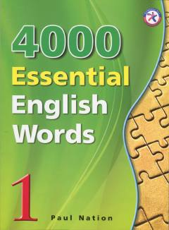

4EIngliz tilidagi eng muhim va eng ko'p ishlatiladigan so'zlarni o'rganish uchun qo'llanma.
Ushbu kitob ingliz tilini o'rganuvchilar uchun eng ko'p ishlatiladigan muhim so'zlarni o'z ichiga olgan o'quv qo'llanmadir. 30 ta unitdan iborat ushbu 1-qism kundalik hayotda va matnlarda eng ko'p uchraydigan so'zlarni yod olish va mustahkamlashga yordam beradi. Kitobda so'zlarning ma'nolari, misollar va mashqlar keltirilgan.